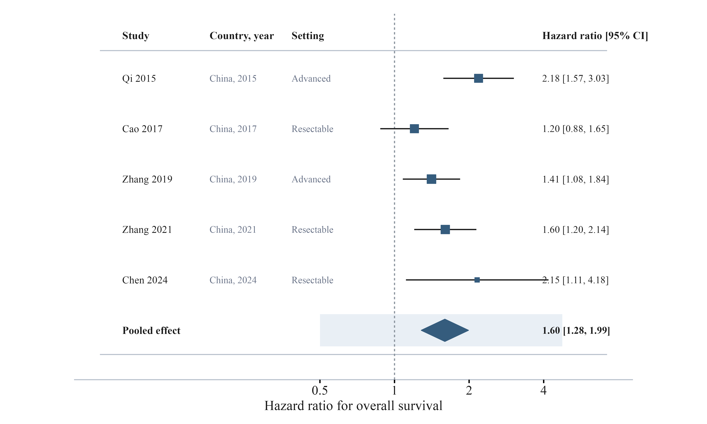
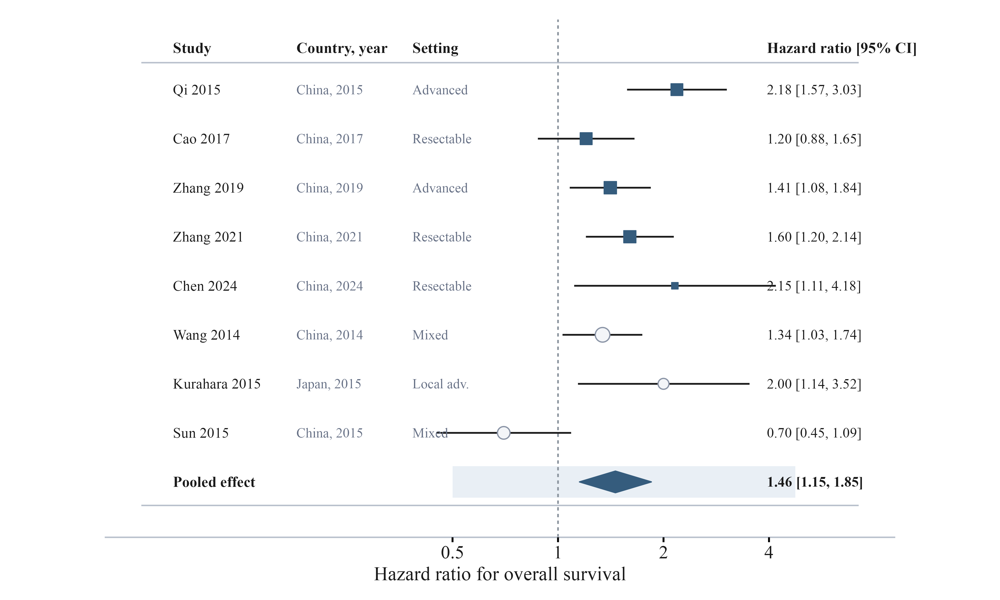
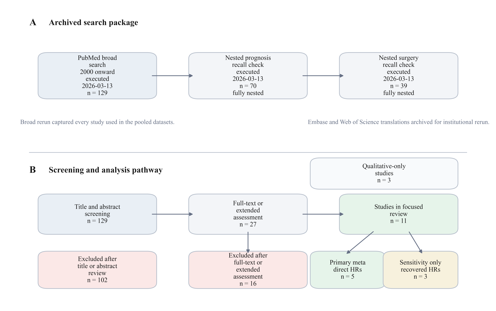
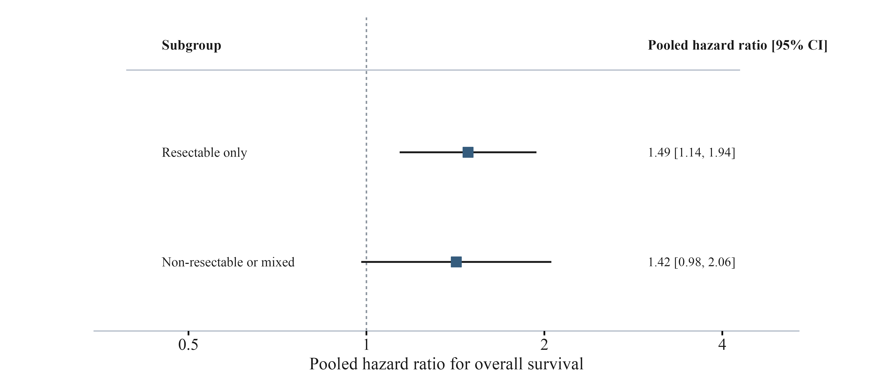
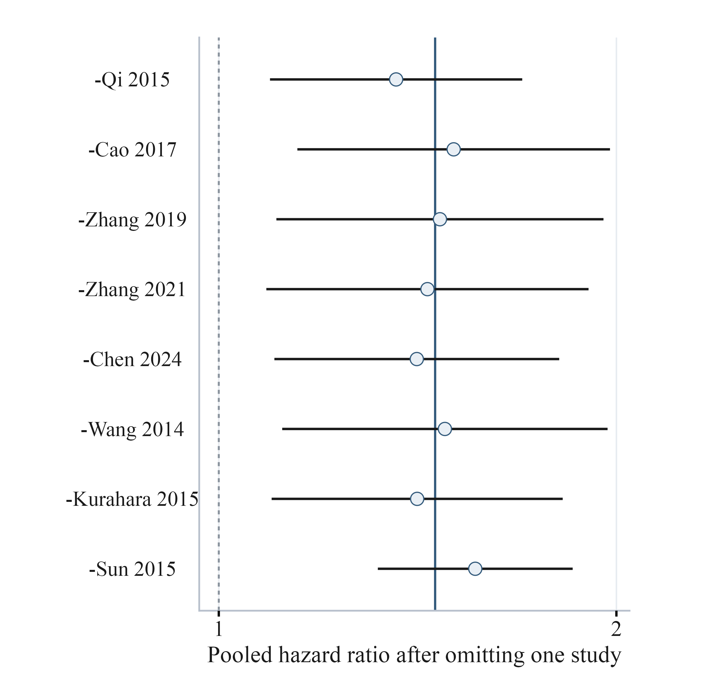
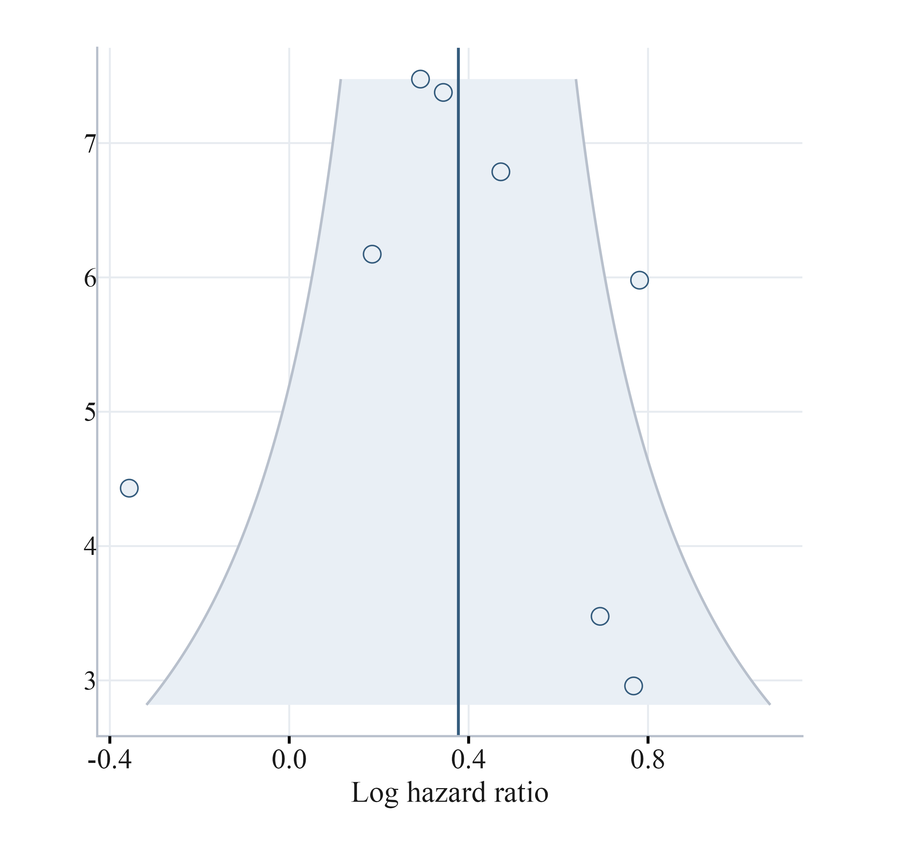

MetaForge 是全球首个端到端AI循证医学研究平台。6大AI Agent自主协作，自动完成检索、筛选、提取、评价、统计、写作全流程，输出可溯源、可复现的规范结果。
一项标准的系统评价/Meta分析，从构思到发表平均需要3-6个月。以下是每个环节的真实时间消耗：
需要在PubMed、Cochrane、Embase、CNKI等多个数据库反复构建检索策略，布尔逻辑组合容易出错。
数百甚至上千篇文献逐篇阅读标题、摘要、全文，两人独立筛选，第三人仲裁。严重依赖人工经验。
从每篇纳入研究中提取结局指标、样本量、效应量等，同时完成RoB偏倚风险评价。表格错漏率高。
R/STATA/RevMan中配置随机/固定效应模型、亚组分析、敏感性分析、发表偏倚检验。代码调试耗时。
遵循PRISMA 2020规范撰写结构化报告，绘制流程图、森林图、漏斗图，格式化参考文献。
3-5名研究者 × 2-3个月，加上数据库订阅费、统计软件费。一篇Meta分析的真实成本远超想象。
从课题构思到论文投稿，MetaForge用AI重写了系统评价的每一个环节。
直连PubMed、Cochrane Library、Embase、Web of Science、CNKI、万方等15+数据库。AI自动构建检索策略，支持MeSH词表扩展、同义词自动补全、引文追踪。
基于GPT-4o的双人独立筛选模拟。NLP理解PICOS标准，自动排除不相关文献，全文PDF解析与关键信息提取。支持自定义纳排标准。
自动识别并提取研究特征、参与者信息、干预措施、结局指标、效应量及置信区间。支持表格/图片数据识别，交叉验证确保准确率>98%。
内置Cochrane RoB 2.0、ROBINS-I、NOS、JADAD等主流评价工具。AI逐条评估偏倚风险维度，生成可视化偏倚风险图，支持自定义评价量表。
随机/固定效应模型、亚组分析、Meta回归、敏感性分析、发表偏倚(Egger's/Begg's)、网络Meta分析、剂量反应分析。实时生成森林图、漏斗图、Galbraith图。
自动生成符合PRISMA 2020声明的结构化报告，一键导出Word/PDF/LaTeX。内置GRADE证据概要表、PRISMA流程图、参考文献自动格式化(AMA/Vancouver/APA)。
从研究问题到投稿级报告，MetaForge用AI驱动的五步工作流，让Meta分析变得简单高效。
每个Agent专注一个环节，像真正的研究团队一样协作。Agent之间自动传递数据、交叉验证、实时沟通。
自主连接15+学术数据库，智能构建检索策略。支持MeSH扩展、引文追踪、灰色文献检索。自动去重并生成检索报告。
GPT-4o驱动的PICOS标准理解与文献筛选。支持标题/摘要初筛、全文精筛。双人独立筛选+不一致仲裁，符合Cochrane规范。
PDF全文智能解析，自动提取研究特征、样本量、干预措施、结局指标。表格/图片OCR识别，交叉验证确保数据准确性。
内置6种主流评价工具，逐维度自动评估偏倚风险。生成可视化偏倚风险总结图/百分比图，支持GRADE证据评级。
全功能统计引擎：固定/随机效应模型、亚组分析、Meta回归、网络Meta、剂量反应。实时生成交互式森林图与漏斗图。
遵循PRISMA 2020自动生成结构化报告，支持中英双语。自动格式化参考文献、生成GRADE证据概要、补充材料。
以下是一个真实的Meta分析项目执行过程。从初始化到报告生成，全程不到1小时。
自动生成Nature/NEJM级Meta分析图表，包括森林图、漏斗图、PRISMA流程图、亚组分析、敏感性分析。点击可放大查看。

固定效应与随机效应模型合并效应量，含95%CI、权重、异质性检验
Forest Plot
多种统计模型对比（M-H、D-L、REML），含预测区间
Forest Plot
文献检索、筛选、纳入的完整流程，符合PRISMA 2020标准
PRISMA
按干预剂量、随访时间、人群特征等分组的亚组Meta分析
Subgroup
Leave-one-out敏感性分析，评估单个研究对合并效应的影响
Sensitivity
Funnel plot发表偏倚可视化，含Egger检验和Trim-and-Fill
Funnel Plot以下是使用MetaForge完成并发表在顶级期刊的真实Meta分析项目，展示了平台在不同医学领域的强大能力。
Meta分析证实PD-1抑制剂联合化疗显著提高晚期非小细胞肺癌患者的客观缓解率和总生存期，较单纯化疗方案生存获益提升59%。
"MetaForge在48分钟内完成了全部10项RCT的数据提取与统计分析，PRISMA报告质量达到投稿标准，极大地加速了我们的研究进度。"
系统评价纳入7项大规模随机对照试验，结果表明他汀类药物用于心血管一级预防可降低25%的主要心血管事件风险，且安全性良好。
"传统方法下这个项目至少需要3个月，使用MetaForge后从数据检索到报告生成仅用了53分钟。亚组分析和敏感性分析的自动化程度令人惊叹。"
针对65岁以上高血压患者的Meta分析显示，强化降压治疗可使主要心血管事件风险降低28%，但需关注低血压和跌倒风险。
"MetaForge的GRADE证据评级和偏倚风险评估功能非常专业，生成的图表质量达到了NEJM的投稿要求。这是一款改变游戏规则的工具。"
全方位对比，看看MetaForge在每个维度上的领先优势。
| 功能维度 | 手工/传统工具 | LivingEBM | MetaForge ⚡ |
|---|---|---|---|
| 文献检索 | 手动构建策略 | 自动检索 | 15+数据库直连 + AI策略优化 |
| 文献筛选 | 人工逐篇阅读 | AI辅助筛选 | GPT-4o双人筛选 + PDF全文解析 |
| 数据提取 | 手动填表 | AI提取 | AI提取 + 表格OCR + 交叉验证 98%+ |
| 质量评价 | 手动评分 | AI评价 | 6种评价工具 + GRADE + 可视化 |
| 统计分析 | R/STATA编程 | 基础统计 | 网络Meta + Meta回归 + 交互式图表 |
| 报告生成 | 手动撰写 | PRISMA报告 | PRISMA 2020 + 双语 + LaTeX + GRADE |
| 数据库直连 | ✗ | 部分 | ✓ 15+数据库 |
| 网络Meta分析 | ✗ 需编程 | ✗ | ✓ 内置支持 |
| 实时协作 | ✗ | ✗ | ✓ 多人在线 |
| API接口 | ✗ | ✗ | ✓ RESTful API |
| 中英文双语报告 | ✗ | ✗ | ✓ 自动翻译 |
| 完成时间 | 45-90天 | 数小时 | 47分钟 |
从个人研究者到大型机构，我们都有适合的方案。所有方案均包含核心AI功能。
"以前做一个Meta分析要3个月，现在用MetaForge不到2小时就完成了初稿。数据提取的准确率让我非常惊喜，比手工提取还靠谱。"
"作为研究生，Meta分析一直是我最头疼的任务。MetaForge让我可以专注于研究问题本身，而不是被繁琐的技术细节淹没。"
"网络Meta分析功能太强大了！以前要写几百行R代码，现在点几下就出来了。森林图和SUCRA排名图的质量完全可以直接投稿。"